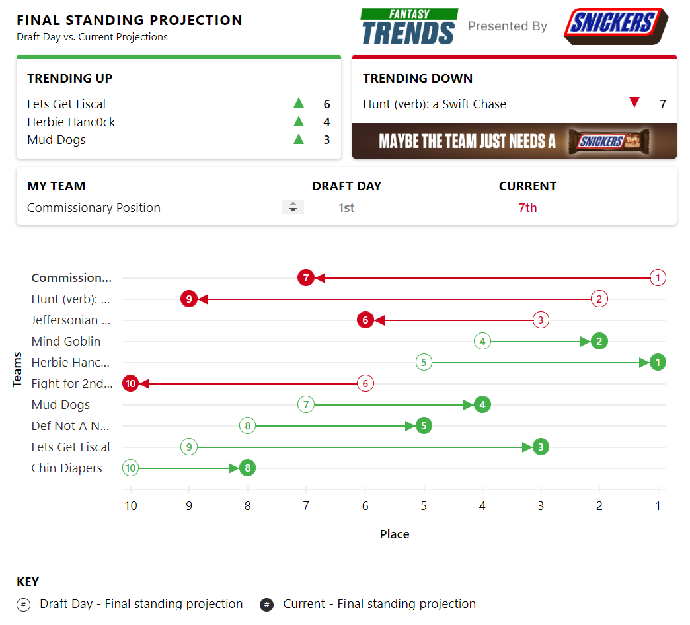
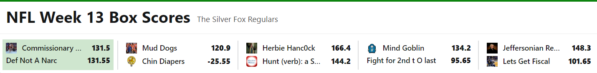

Silver Fox Regulars
Week 13 Commissioner Report

| Big Dick of the Week | Dog of the Week | Bad Beat | |
|---|---|---|---|
| Team | Herbie Hancock | Chin Diapers | Commsionary Position |
| Points | 166 | -25 | Lost by 0.05 Points |

Week 13 Recap - ChatGPT has entered the Chat
Week 13 of the 2022 NFL season was a wild one for fantasy football players. The top performers included QBs Patrick Mahomes and Deshaun Watson, RBs Alvin Kamara and Derrick Henry, and WRs Davante Adams and Tyreek Hill. On the other hand, others like Devonta Freeman and Carson Wentz, failed to deliver. With fantasy playoffs just around the corner, these results can make or break a team's chances of making it to the next round. Owners will have to carefully evaluate their lineups in the coming week and make sure they have the right players to get them through the playoffs.
Whoa...AI is coming for everyone's jobs, even your commissioner's. It's good, but even the guy's fighting for last know that Carson Wentz never has an off week. Nice try robots!
-
Even though there is an asterisk this week BDOW is Ryan. Few solid weeks heading into the playoffs as a lock for a top spot. Could this be the year? (Hopefully not)
-
Ben with a disappointing loss. Even though his team had a strong performance he couldn't overcome the -200 points his team was penalized. You hate to see it really, could have been the BDOW. Unfortunately, he doesn't know how to use the cloud. Big week to see if the combine video get posted.
-
Possibly the clenchiest Butt Clencher of all time. My cheeks were so tight I don't think I'll be able to shit for a week. 0.05 points separated Conor and me from a week 13 win and huge playoff implications. A difference of a yard for any player on both sides could've changed this outcome. Fantasy football, a game of inches.
-
With one week left Kellen, Petty and myself are all fighting for the last playoff spot. With 6 teams on bye it's going to be a wild week!